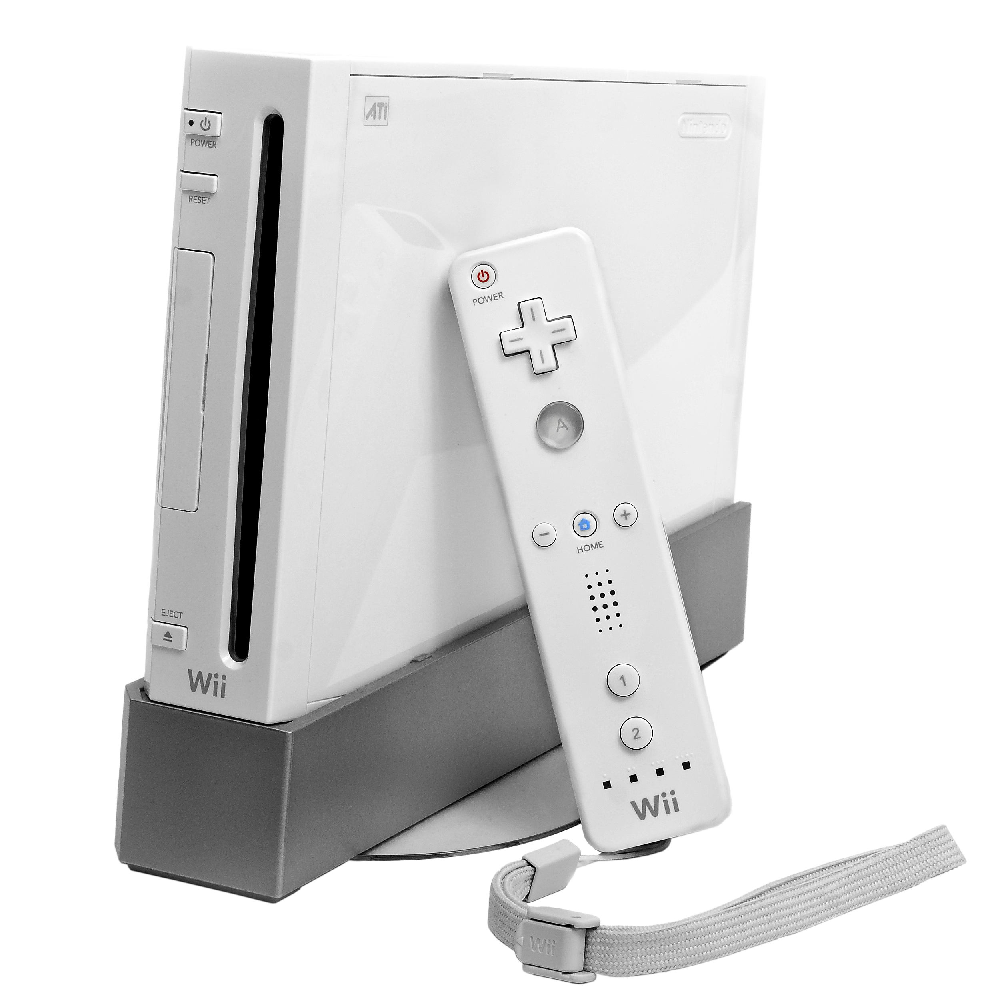
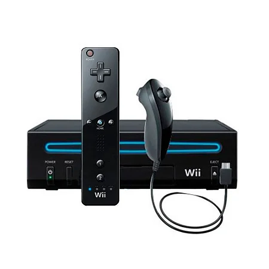
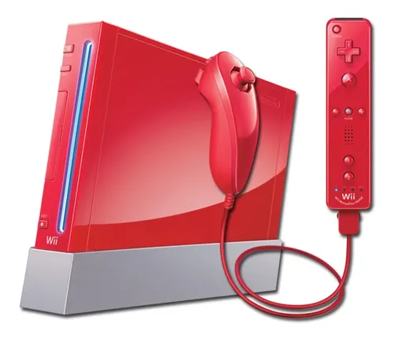
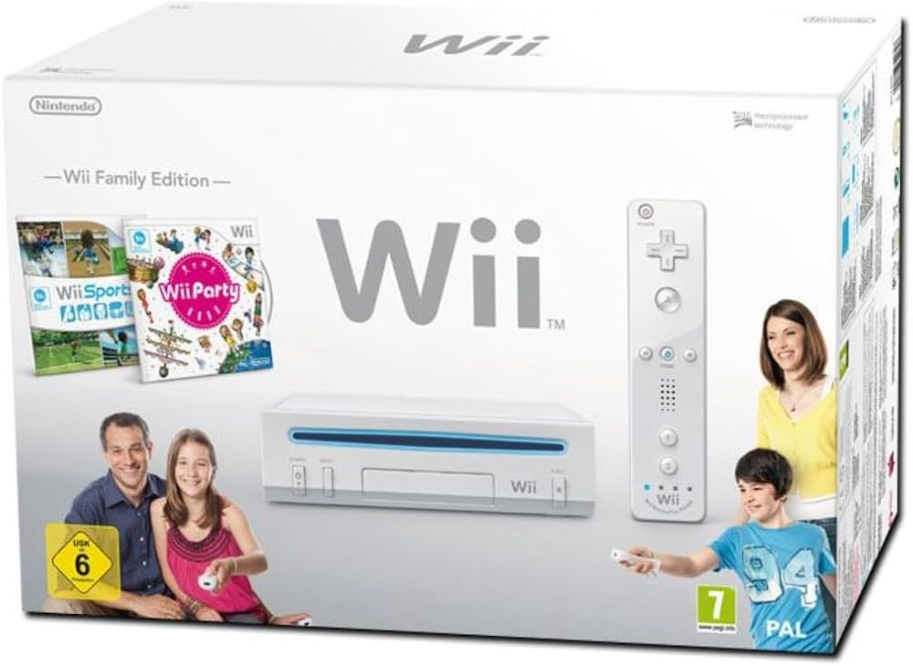
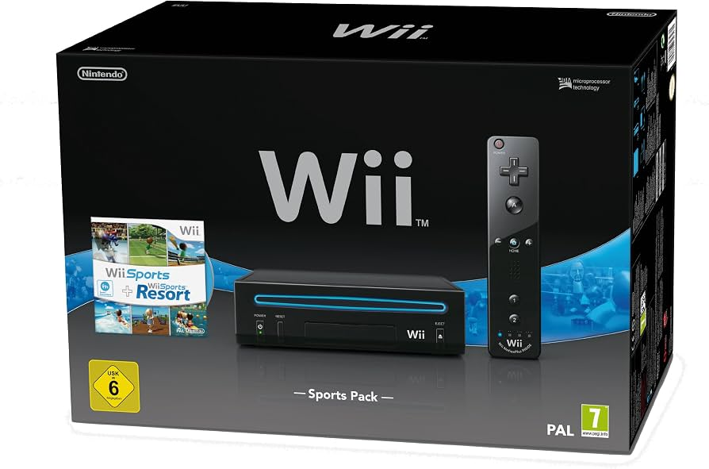
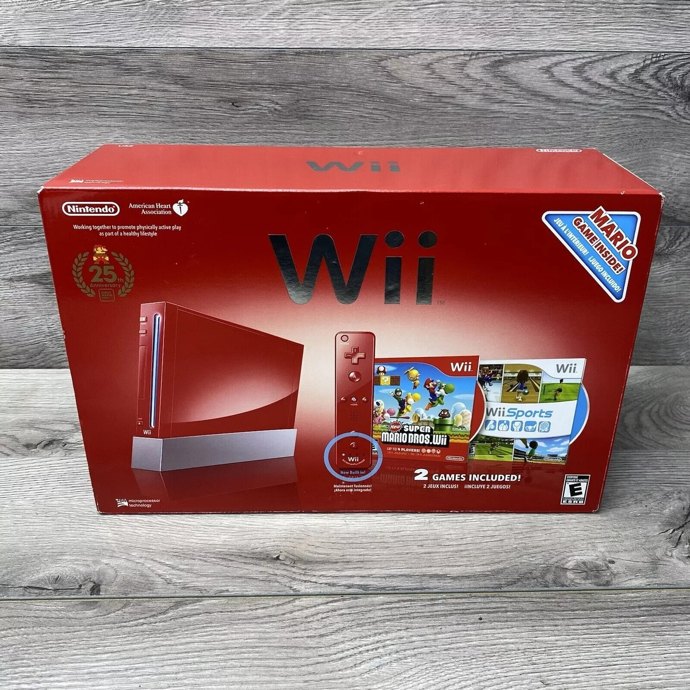
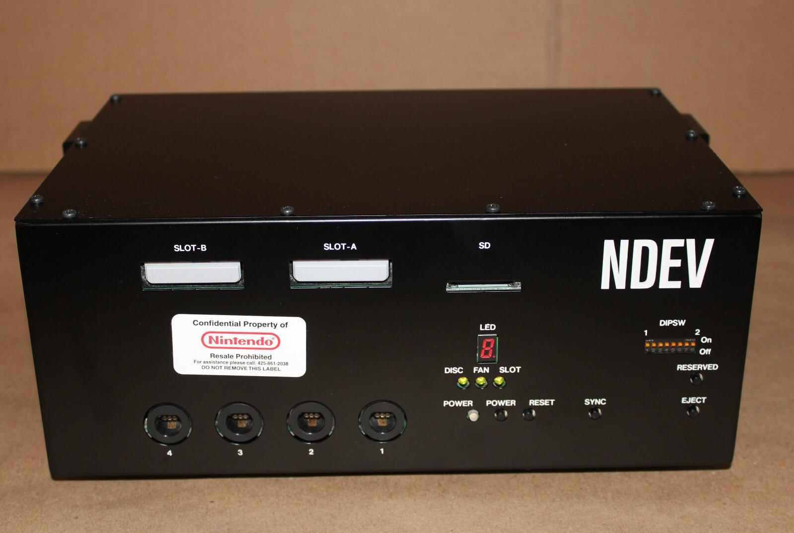

Nintendo Wii (Posse de Pedro Ramos)

Nintendo Wii
O Nintendo Wii é um console doméstico desenvolvido e
produzido pela Nintendo. Foi lançado originalmente em
novembro de 2006 e pertence à sétima geração dos
videogames.
O aparelho sucedeu o Nintendo GameCube e apresentou uma
proposta diferente da disputa tradicional por gráficos
e poder de processamento.
Seu principal diferencial foi o Wii Remote, controle que
utiliza sensores de movimento para detectar a orientação
e os movimentos realizados pelo jogador.
A proposta permitiu que diversos jogos fossem controlados
através de movimentos físicos, tornando o sistema acessível
também para pessoas que não tinham o hábito de jogar
videogames.
Mercado e Popularização
Durante a década de 2000, a indústria dos videogames
começou a buscar novos públicos além dos jogadores
tradicionais.
A Nintendo adotou uma estratégia diferente com o Wii,
concentrando parte importante de sua campanha na facilidade
de utilização e na interação por movimento.
O console rapidamente ganhou espaço entre famílias,
jogadores casuais e pessoas que anteriormente não tinham
contato frequente com videogames.
Jogos como Wii Sports, Wii Play, Wii Fit e Mario Kart Wii
ajudaram a apresentar o sistema para um público muito
amplo.
O Wii também foi utilizado em ambientes que iam além
do entretenimento doméstico, aparecendo em determinadas
aplicações educacionais, demonstrações e experiências
interativas.
Mercado Brasileiro
O Nintendo Wii também ganhou bastante popularidade no
mercado brasileiro durante a década de 2000.
A combinação entre o console, Wii Remote e jogos
baseados em movimento ajudou a criar uma forte presença
do aparelho no país.
O mercado brasileiro também recebeu uma grande variedade
de acessórios e controles compatíveis, tanto oficiais
quanto produzidos por outras empresas.
Assim como ocorreu com outros consoles da Nintendo,
existiram diferentes formas de comercialização do Wii
no Brasil ao longo de sua vida útil, incluindo produtos
importados e posteriormente iniciativas de distribuição
oficial.
Contexto Histórico


O Nintendo Wii fez parte da sétima geração dos videogames,
período em que também foram lançados o Xbox 360 da Microsoft
e o PlayStation 3 da Sony.
Enquanto Xbox 360 e PlayStation 3 buscavam principalmente
maior capacidade gráfica e processamento em comparação
com a geração anterior, a Nintendo adotou uma abordagem
diferente com o Wii.
O sistema utilizava hardware baseado em uma evolução da
arquitetura do GameCube, mas acrescentava sensores de
movimento e uma interface de controle completamente
diferente da utilizada pelos consoles tradicionais.
Essa estratégia fez com que o Wii ocupasse uma posição
particular dentro da geração e ajudou a popularizar os
controles por movimento em uma escala muito maior.
Jogos e Acessórios
O Wii recebeu uma grande biblioteca de jogos durante sua
vida comercial.
Entre os títulos mais conhecidos estão Wii Sports,
Wii Sports Resort, Super Mario Galaxy, Super Mario Galaxy 2,
Mario Kart Wii, The Legend of Zelda: Twilight Princess,
The Legend of Zelda: Skyward Sword, New Super Mario Bros. Wii,
Donkey Kong Country Returns, Metroid Prime 3 e muitos outros.
O console também recebeu jogos de empresas externas,
incluindo séries como Resident Evil, Sonic, Rayman,
Guitar Hero e Just Dance.
Além do Wii Remote e do Nunchuk, diversos acessórios foram
produzidos para o console, incluindo o Wii Balance Board,
Wii MotionPlus, Classic Controller, Wii Zapper,
controles para jogos musicais e diferentes instrumentos
utilizados em jogos específicos.
Modelos e Variações
O Nintendo Wii recebeu diferentes revisões e versões
durante sua existência.
O modelo original possui o conhecido formato vertical
e uma unidade de disco frontal capaz de utilizar discos
ópticos próprios do Wii e discos de GameCube.
Posteriormente, a Nintendo lançou o Wii Family Edition,
que retirava alguns recursos presentes no modelo original,
incluindo a compatibilidade com jogos e acessórios
do GameCube.
Também foi lançado o Wii Mini, uma versão ainda menor
e simplificada do console, com diversas funções removidas
em relação ao Wii original.
Além das revisões físicas, o Wii recebeu diferentes cores
e edições especiais ao longo dos anos.







